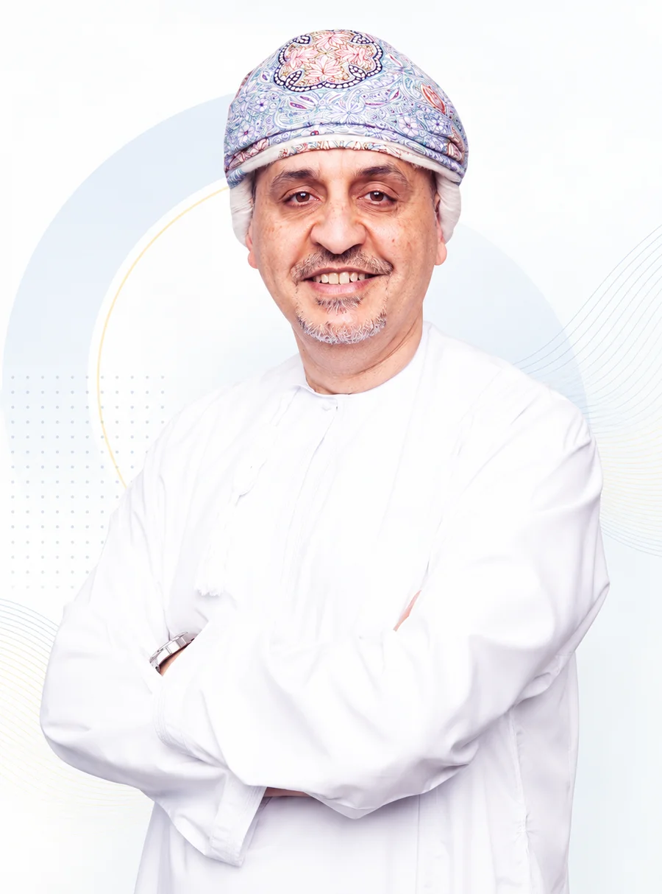

From inefficiency, an idea. From an idea, a company.
Dr. Riyadh Moosa, CEO, on the thinking behind Nibras — and why he left a 28-year career at PDO to commercialize it.
I always believed that Technology is there to make our lives easier. More than 30 years ago, I enjoyed coding because it allowed me to program my ZX Sinclair to do my high‑school homework for me. Later when I started my career as a petroleum engineer, I found that I was at the mercy of corporate data systems; wasting majority of my time looking for the data I need to do my work. The excuse was the complexity of the petroleum asset we were managing. So; like any good engineer, I looked for a working solution for a similar problem to imitate; and the solution was our human nervous system. In short, we needed to build a system, that just like our nervous system, is quiet most of the time; but when one of our wells, compressors, pumps, equipment… etc. required attention triggered pain to grab the attention of the right person at the right time. We called the approach EBM (Exception Based Management); and the system we built is our Nibras platform. Nibras in Arabic means light; and essentially, the role of Nibras was to shine a light on where an employee's time would add the most value.
Like our nervous system, Nibras had to go through many evolutionary steps. We found the Lean methodology to be the best approach to guide this evolution, but it was the people who drove the natural selection of what went into Nibras and how. There have been countless people in PDO and iNNOVATEQ contributing over 300 man‑years over the decade of Nibras's evolution; and the journey continues. Personally, I want to express my gratitude to every single one of those people and tell them that your contributions are the DNA of this amazing, industry‑leading Omani innovation.

The impact of Nibras was above and beyond digitalization! It redefined petroleum asset management and disrupted how asset teams work. The business impact has been massive, exceeding hundreds of millions of dollars in value, but to me, this was just a byproduct of enabling greater respect of people's intellect. In my view, it was a result of not wasting people's time in performing mundane repetitive tasks, and instead, providing them a vehicle to capture their knowledge, experience, and creativity in a meaningful, practical and even fun way.
The buzz I got from being involved in the Nibras journey was so big, that I decided to take the risk of early retirement from PDO, a company that for 28 years taught me everything I knew, and pursue the disruption of the rest of the industry through iNNOVATEQ, the great organization I currently lead. iNNOVATEQ was founded with a single mission of commercializing Nibras. Fortunately, I have been surrounded by a group of talented entrepreneurs who wake up every day with a mission to make things better. Together we became iNNOVATEQ's pioneering family.
At iNNOVATEQ we have big ambitions. We aim to become a standard in petroleum and energy integrated asset management, not only in Oman but across the world. We also aim to spread the vision and philosophy of Nibras to help other industries; and our latest Nibras platform, is built to enable just that. I am confident that with our fantastic platform and our amazing people all of this is within reach, and I look forward to the day that we celebrate iNNOVATEQ becoming Oman's first Tech Unicorn generating huge ICV (In Country Value) for Oman and its lovely people.
iNNOVATEQ's vision is to make a difference in the life of individuals and the performance of organizations through our products and services which we deliver by maintaining the highest levels of business ethics and integrity. At our core we aim to establish ICV in every engagement and for every country we do business in. We always welcome people and partners to join us in our journey, and offer equal opportunity for those who believe in making an impact.
The journey has just started, bringing forward the future of digital transformation, and lending a hand to people and organizations who want to chart their own business destiny.
With respect and love,
Dr. Riyadh Moosa
CEO – iNNOVATEQ
Meet the team turning this into a platform.
Leadership across engineering, delivery, product and commercial.